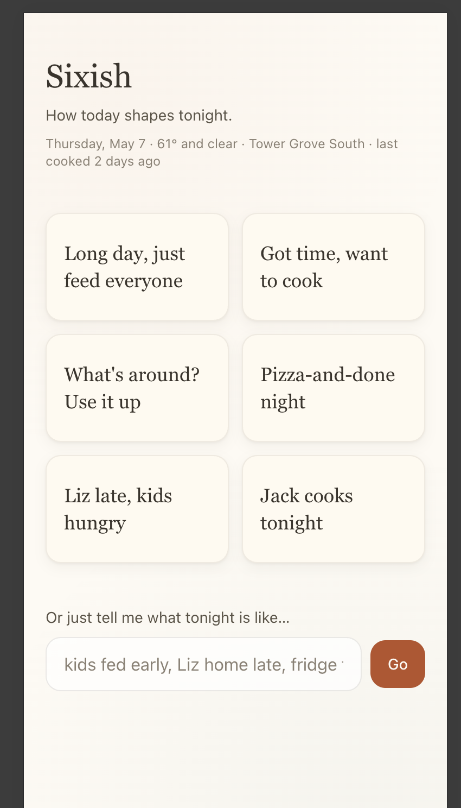
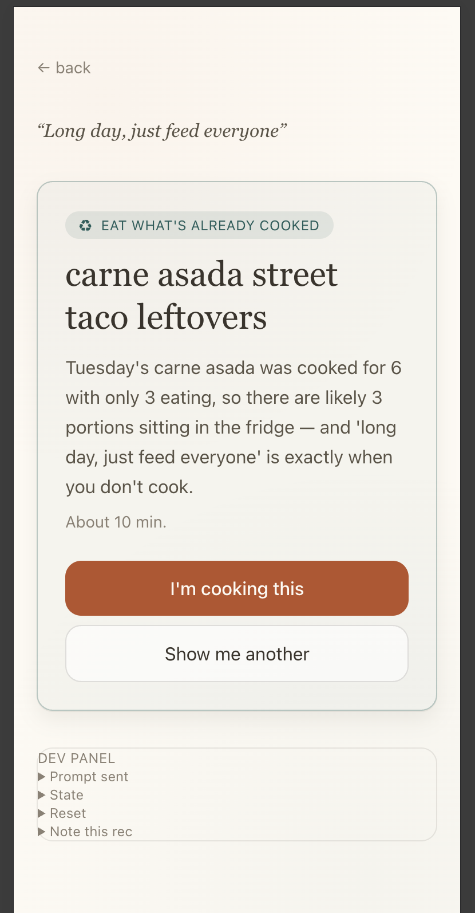
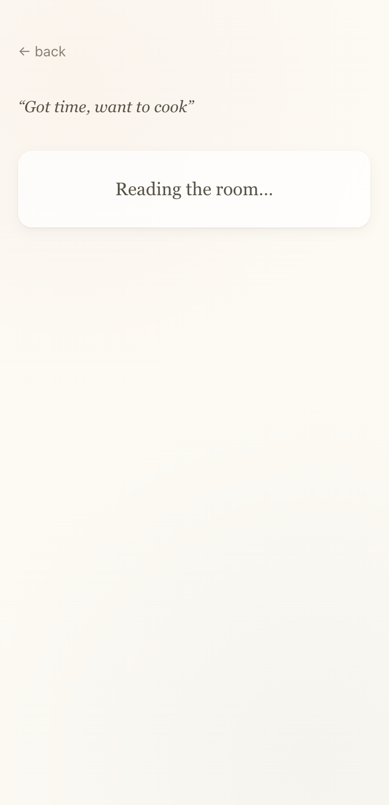
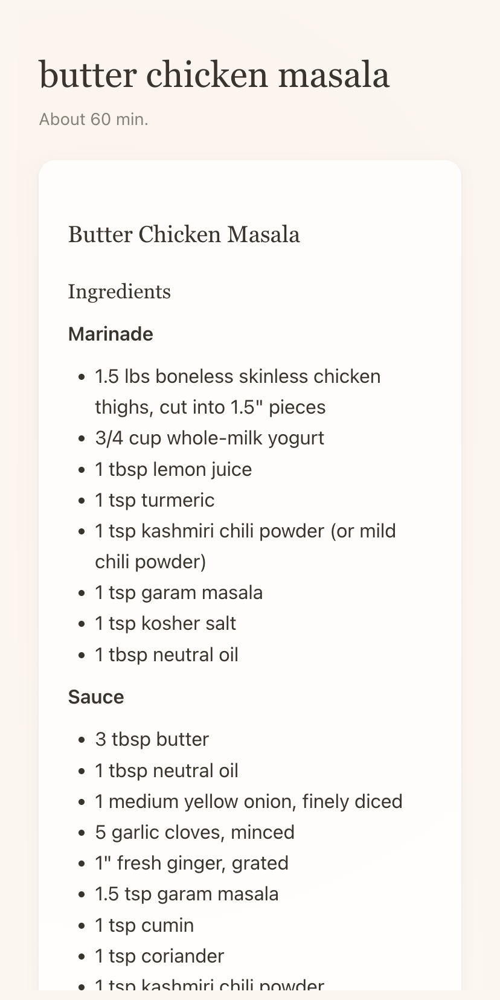
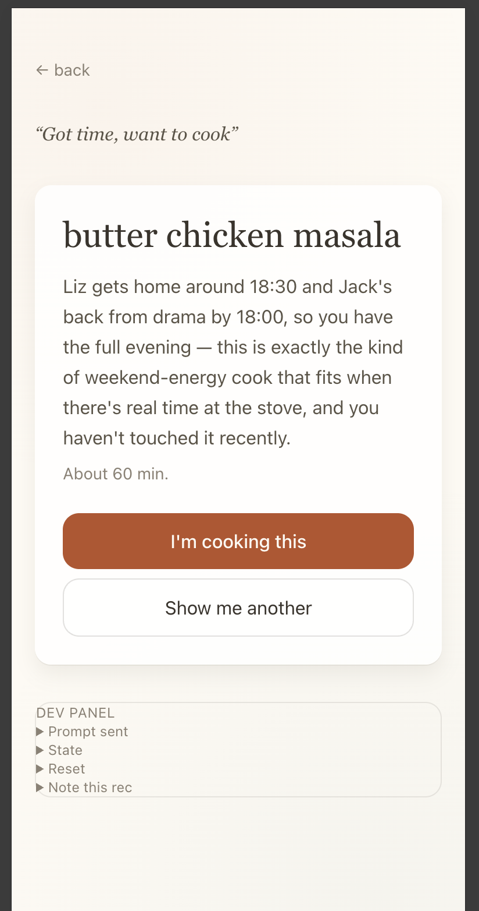

How today shapes tonight — one-pager and technical explainer
How today shapes tonight.
Sixish is a cooking app for households that already know how to cook.
Not a recipe search engine. Not a meal planner. Not a discovery feed.
A small, attentive presence in the dinner decision — the part of the day where someone has to figure out what to feed everyone, given who's home, how the day went, what's around, and what kind of energy is left.
You answer a single question — what is tonight like? — by tapping a tile or typing a sentence. Sixish reads the situation (day, weather, what's local, whether last night's dinner made enough for tonight, what your household has told it about itself) and offers one recommendation, with a real reason it fits. Sometimes the right answer is any orzo left? — the leftover that's already in the fridge, not a new dish to cook. Sometimes it's a 25-minute weeknight meal. Either way, one recommendation. Not ten. Take it or leave it.
The household already knows what tonight is like; they don't have an easy way to turn that knowing into "okay, here's what we're making." Sixish is the translator.
Every tool that helps you decide tonight is, over time, also doing something to your ability to decide without it. Sixish helps on the nights you want help and gets out of the way on the nights you don't. The getting-out-of-the-way is part of the product, not an accident — it protects your continued capacity to cook unaided, which we think is worth protecting. What capability looks like is up to you. Putting stuff together and reheating count; the matching skill that says we have eggs, the kale's going, here's what works is real cognitive work even when no recipe is involved.
Refusals are constraints, not preference signals. The system doesn't model you; it listens to you.
Observational, present, brief. Uses your family's names. References specific things you actually have. Asks questions when it doesn't know — any orzo left? — rather than asserting facts it can't see.
Cooking has always been local; cooking apps have always been the opposite. The longer goal is community-grounded culinary knowledge specific to where you live, built as a commons rather than a marketplace — no paid placements, no sponsored recommendations.
Sixish has a quiet mode where it does almost nothing, because some nights are for cooking without help and the architecture is built to make space for that.
Households where someone is already the cook, and the problem isn't recipes — it's deciding. Households with rhythms (kids' activities, partners' shifts). Cooks who improvise more than they plan. People who'd rather have a tool that can be quiet than a tool that always insists on being useful. Anyone tired of opening a recipe app, scrolling through twenty trending suggestions, closing it, and making grilled cheese.
Cooking dinner is one of the most repeated human acts — about fifteen thousand decisions over a cooking life. Across that many decisions, the cook's capability either stays alive or quietly fades depending on what kind of help they accept along the way. Sixish is built to help with deciding on the nights that's what you want, without quietly making you worse at deciding when you don't.
A small, attentive presence in the dinner decision. Quiet when you want quiet.
How today shapes tonight.
A technical explainer — what's actually happening when you tap a tile and a recommendation comes back.
Written for engineers, product people, and curious users who want to understand the architecture under the hood. No marketing language. No black-box hand-waving.

A second commitment, less visible in the day-to-day product but increasingly central to how the architecture is evolving: the system is designed to keep the cook's own situational-matching faculty alive over time, rather than quietly replacing it. This is the maintenance-threat dimension explored at length in the modes section near the end of this document. It shapes choices throughout — including some that look at first like ordinary product decisions.
Sixish's state lives in four layers, ordered from most stable to most ephemeral. Every recommendation reads from all four, with the layers feeding into the prompt in stability order.
Hard rules captured once, treated as immutable. Allergies, foods someone in the house won't eat, equipment, household composition, recurring schedules (a partner's work rotation, a kid's school activities with end-of-season dates), location, weekly shop rhythm. These are facts, not preferences. They're stored as a constants file in v0; eventually they're captured through a brief onboarding conversation. The system treats them as constraints to be honored absolutely, never as suggestions to be balanced against other factors.
A small set of dishes the household specifically named when asked targeted questions: a meal everyone likes, a meal made when the cook is tired, a meal cooked on weekends with time, optionally a comfort meal. Each anchor is a (role, dish) pair where the dish is whatever the household calls it — the chicken with the lemons, Liz's chickpea curry — stored as freeform text, never normalized into structured fields. Anchors aren't preferences and aren't constraints; they're orienting data. They tell the system what techniques the cook is comfortable with, what ingredients are kept around, what the household's actual repertoire looks like. The model reads meaning from the dish names directly rather than extracting tags.
Patterns the household has confirmed through use. The detection layer (described below) watches the stream of nightly observations and proposes candidates; the household ratifies or dismisses each one through a quiet question. Ratified patterns include a day-of-week, an optional time estimate, a description, and an optional expiration date. They live in localStorage and feed into the recommendation prompt the same way configured boundaries do — but they emerged through use rather than configuration, which makes them the architecturally interesting layer.
The ephemeral state for tonight specifically. Today's date and day of week, current weather (one API call to Open-Meteo, cached per session), location-anchored facts (whether the local farmers market is open today), the last few nights' cooked dishes from the night log, what the user just typed or which tile they tapped. Recomputed every session.

portionsCooked exceeded household size. The most-ephemeral layer (the night log entry from two days ago) is the hinge here — it shapes today's recommendation without needing to be a configured boundary or a ratified pattern.
Every recommendation prompt is the concatenation of these four layers, in this order. The ordering matters: most-stable facts come first so they frame the model's reading of more-ephemeral context, not the other way around.
When the user taps a tile or submits a sentence:
/api/parse-recovery to classify whether the cook is asking about a meal they already made (recovery) or proposing a fresh situational input. Tile inputs skip this step — tile labels are statically forward-looking, so the classifier call is unnecessary. If recovery is detected, the flow branches to the recovery path described in its own section below./api/recommend with the gathered state plus the tile or freeform text. The request includes headers carrying the client's local date (so server-side timezone differences don't break day-of-week derivation) and, if dev mode is on, an optional date-override header.{ name, whyItFits, timeEstimateMinutes, expectedPortions, isLeftoverOption, recipe }.expectedPortions (so leftover detection works on subsequent nights) and the full recipe block (so the night becomes recoverable later). If the user taps "show me another," the rejected recommendation's name gets added to a session-only blocked list and the request goes back, with the new constraint included.
When the user rejects a recommendation by tapping "show me another," the rejected recommendation gets added to a blockedRecommendations array that's sent on subsequent requests in the same session. The model is told explicitly: these have been declined for tonight; do not suggest them again or suggest near-variants. The household is asking for something meaningfully different.
This is a small architectural choice with significant downstream consequences. Most recommendation systems treat user rejections as soft preference signals — accumulated over time, fed into a model that learns "this user doesn't like X." Sixish doesn't. A rejection is a constraint on the current session, full stop. It binds the next recommendation, then expires when the session ends. The household's "no" isn't being mined for future personalization; it's being honored in the moment.
The reason this matters: preference-aggregation models tend to drift toward what they think you want, and when they get it wrong, they keep getting it wrong in the same way. A constraint-based refusal model gets it right or you tell it again, with no accumulated baggage. The household stays in control of the recommendation in a way that aggregation models can't match.
A late v0 addition that's worth describing in detail because it carries a real architectural commitment. The cook can ask about a meal they made recently — that chicken from last week, what did I cook Tuesday — and get the recipe back. The mechanism deliberately avoids becoming an archive, a favorites list, or a browsing surface.
Recovery has no top-level surface. There is no "history" tab, no "past recipes" view, no infinite scroll of previous meals. Recovery happens through the existing freeform input, parsed as a different kind of query and routed differently. The home screen does not change; the cook simply asks about a past meal in their own language and the system responds.
The freeform input always passes through /api/parse-recovery first, which classifies the input as recovery-or-not and extracts a hint describing what the cook is asking about. The classifier defaults to forward-looking on ambiguity — the asymmetry of error costs favors it. A missed recovery costs the cook one extra step (re-ask more specifically); a false-recovery on a forward-looking query costs a confusing screen and a back-tap. Lean toward the cheaper-to-recover-from action when uncertain.
If recovery is detected, the client calls /api/recover-recipe with the hint and a compact summary of the last 28 days of night-log entries (just dish names and dates — the recipe text never crosses the network for recovery). The matcher returns one of three shapes: match (with an entryDate the client uses to look up the full stored recipe locally), clarify (a question with tappable options when multiple entries plausibly fit), or none (an in-voice acknowledgment that no plausible match exists in the searched window). The matcher prompt is explicit that the model must not invent recipes the cook didn't cook.
Before recovery, the night log captured dish name, date, day of week, household size, and portions — enough for leftover detection and pattern detection but not enough for recovery, since regenerating "the same" recipe would actually produce a similar recipe and that gap matters when the cook is trying to recreate a specific night. The recipe is now persisted alongside the existing fields when "I'm cooking this" is tapped. Old entries without the field are gracefully unrecoverable — if the matcher returns an entryDate for an entry that predates the change, the client converts the response to "found the entry but didn't store the recipe back then" rather than fabricating one.

sixish:nightLog when the user taps I'm cooking this. This is the field that makes a specific night recoverable later — not a regenerated similar recipe, but the exact one the cook was rendered.
No favorites, no stars, no marked-as-loved. The night log captures what was cooked, not what was preferred. No filters, tags, or searchable database UI — the freeform input is the search interface. No meal-planning use of recovered meals. No content layer (notes, photos, ratings). The architectural commitment is that recovery is a way for the cook to ask a specific question about their own history, not a doorway into the system aggregating that history into preferences. The same household-as-controller principle that governs refusals governs recovery: the cook's history is theirs, queryable on demand, never converted into a model of them.
This is the most architecturally distinctive part of the system. The mechanism that turns nightly observations into stable household knowledge.
Every tile tap and every freeform text submission gets logged to observationLog in localStorage. Each entry has the date, day of week, source (tile vs. open-input), and the text itself. This log accumulates passively as the household uses the app. It's never shown to the user as a feature; it's the substrate the detection layer reads from.
Once per week (gated by a lastDetectionRun timestamp), if the observation log has at least five entries in the last six weeks, the system kicks off a non-blocking call to /api/detect-patterns. The detection call sends the recent observations to the LLM with a structured-output prompt asking: are there recurring patterns by day of week worth surfacing? A pattern qualifies if it has occurred at least three times in the window, clusters on a specific day, and represents a real household rhythm rather than a generic state. The model returns candidates with day, time estimate, description, occurrence count, and a short label.
The detection call is its own LLM round trip, separate from recommendation generation. It runs in the background — the user never sees a "detecting patterns" UI — and its results are stored quietly in pendingCandidates. If detection fails (API down, parse error), the bookkeeping advances anyway and detection retries the following week.
The system also passes detection a list of already-ratified and already-dismissed patterns, instructing it not to re-surface them. There's a defensive second pass server-side that filters candidates against those lists, in case the model overlooks the instruction.
When at least one candidate is pending, the system surfaces it at the lowest-stakes possible moment — after the user taps "I'm cooking this." A small component appears beneath the recipe with a single question in the system's voice (Tuesday — Tyler day?) and three response paths: yes, no, or a typed clarification ("yeah, until June"). Yes promotes the candidate to ratified observations. No adds it to dismissals, suppressing it from future detection runs. Typed responses get sent to a small parser LLM call (/api/parse-ratification) that extracts a yes/no plus any expiration date, then routes accordingly.
Ratified observations get stored in ratifiedObservations with the structured fields, the ratification timestamp, and any expiration date. From the next recommendation onward, the prompt assembly includes ratified observations relevant to today's day of week:
## PATTERNS THE HOUSEHOLD HAS CONFIRMED FOR TUESDAYS - Jack with Tyler for tutoring, until 5pm
The model is instructed to treat these as constraints just like configured boundaries. The recommendation's whyItFits line then references the pattern specifically — 5:30 dinner makes sense, Tyler wraps at 5 — closing the loop. A fact the household typed three Tuesdays ago, ratified once, has now reshaped how the system reasons about Tuesdays.

whyItFits referencing ratified observations directly — Liz gets home around 18:30 and Jack's back from drama by 18:00. Patterns the household confirmed once through after-cook ratification are now reshaping how the system reasons about this specific evening.
Sixish currently has two surfaces where the system speaks beyond the recommendation itself.
The component described above — a single quiet question after "I'm cooking this," low-stakes by design.
A weekly surface, accessed through a quiet line on the home screen on Sundays only (Sunday — got a minute to look ahead?). The Sunday screen batches three categories: pending ratifications that haven't yet surfaced via after-cook, expiring boundaries within the next 14 days (both ratified observations and configured seasonal items), and anticipatory questions about the coming week (generated by a small set of hardcoded detectors — recurring tile patterns not yet ratified, schedule transitions like a partner's rotation flipping, seasonal events like the local market opening).
Both surfaces speak in the same voice and write to the same downstream layer. A ratification produced via after-cook and one produced via Sunday produce identical state — the recommendation prompt assembly is agnostic to which surface created it. This dual-surface composability is the architectural property that makes future surfaces cheap to add: each new surface inherits the established voice rather than re-establishing it, and downstream layers don't have to know about new upstream surfaces.
A subtle piece of architecture worth naming. Configured boundaries are hardcoded in household.ts — the user can't edit them through the UI. But when a user extends a configured boundary's expiration date through the Sunday flow ("yes, but until June 15"), the extension can't write back to the constants file. The clean answer: a ratified observation is created that shadows the configured boundary with the new expiration, and the detection logic skips configured boundaries that are shadowed. The original configured entry is preserved; the ratified shadow effectively overrides it. This means configured boundaries can be modified through use without the constants file ever changing, which is the right architecture once user-controlled configured boundaries become editable through real onboarding.
A consistent voice across all surfaces is structurally important — if Sixish sounded like several different products glued together, the felt-quality of the architecture would collapse. The voice is maintained through three reinforcing mechanisms.
A written specification with rules, sample copy across every context where the system speaks, and explicit failure-mode examples. The guide is treated as authoritative: any copy that fails the guide is rewritten until it doesn't. The guide is also versioned — as new contexts emerge, sample copy is added.
A condensed version of the voice guide ships in the system prompt for every LLM call — the recommendation generator, the recovery classifier, the recovery matcher, the pattern detector, the ratification parser. The condensed version: speak observationally, reference specific things, use household member names, never use "I noticed" or "I see" or other observation-asserting language, ask questions when reasoning from inferred-but-unobservable facts, no marketing adjectives. The model is given enough constraint to stay in voice without being micro-managed.
The architectural payoff: the voice holds across surfaces because the rules that produce it are uniform across surfaces. Adding a third or fourth voice surface in the future doesn't require re-establishing what the system sounds like; it inherits.
A small but important rule, applied at the prompt level. The system has two kinds of facts it can reason from:
System-known facts — date, weather, day of week, what the user just typed, stored boundaries. The system either has these directly or has reliable derivations from them.
Inferred-but-unobservable facts — whether leftovers actually exist in the fridge, whether an ingredient is still around, whether a planned activity actually happened. The system can compute that leftovers should exist (yesterday's portionsCooked exceeded household size) but can't verify the fridge.
This principle preserves honesty in the voice. Most LLM-driven products default to confident assertions about everything because confidence reads as competence. Sixish's discipline is to ask when it doesn't know, which paradoxically reads as warmer and more trustworthy than fake confidence — because the household is rarely surprised by being wrong, since the system mostly only asserts things it can actually back up.
A specific architectural commitment: when the household ignores any of the system's surfaces, the system never escalates.
This shows up in concrete ways:
v0 keeps everything in browser localStorage. Single-user, single-browser, no backend persistence. Specific keys:
sixish:nightLog — what was cooked, with portions, household size, and (after the recovery change) the full recipe block from the recommendation that was acceptedsixish:observationLog — every tile tap and freeform input, datedsixish:pendingCandidates — detected patterns awaiting ratificationsixish:ratifiedObservations — confirmed patternssixish:dismissedCandidates — patterns the household said no tosixish:weeklyNotes — anticipatory typed responses, scoped to a weeksixish:anticipatorySettled — anticipatory items the household has resolvedsixish:sundayCheckInState — per-Sunday tracking of which items got resolved or skippedsixish:lastDetectionRun — throttle for the once-per-week detection callConfigured boundaries and culinary anchors live in the codebase rather than localStorage, because they're hardcoded in v0. When onboarding gets built, both move into localStorage with the same call signatures, and the prompt assembly doesn't change.
The storage layer is abstracted behind a clean interface in lib/storage.ts — components and API routes never touch localStorage directly. This matters because the eventual production architecture is likely not localStorage-only. The probable path: local-first storage with the household data on-device, but cloud-based LLM inference for the actual recommendation calls. The storage abstraction lets that migration happen without changes to consumers.
For a marketed Sixish, the privacy posture matters. Household text — kid activities, work schedules, family rhythms — is meaningfully personal. The architecture is designed to send only what's needed for each LLM call to the inference provider, with no persistent server-side storage of household profiles. The recovery flow is a small example of the discipline at work: the matcher receives dish names and dates only; recipe text is pulled from localStorage on the client after the matcher returns an entryDate. Eventually some of the structural reasoning (pattern detection, boundary matching, recovery classification) probably moves on-device using smaller open models, while the harder reasoning (recommendation generation, recipe writing) continues to use a frontier model with minimized context. That's a multi-year arc; the architecture is designed to absorb the migration when local model quality crosses the line.
The system uses a single frontier model (claude-sonnet-4-6 in v0) for five purposes:
{ isRecovery, hint }. Cheap call, lightweight prompt, defaults to forward-looking on ambiguity.The architecture is designed around the model doing the reasoning and the system providing well-structured context. There are no hand-coded recommendation rules, no preference-matching algorithms, no scoring functions. The model reads the layered description, applies its own reasoning, and produces output. The system's job is to make sure the description is honest and complete, the voice rules are clear, and the output schema is enforced.
The system has been validated end-to-end through several deliberate architectural tests:
whyItFits line on the relevant day of the week.A dev panel with prompt inspection makes the entire LLM context visible during testing, which makes architectural validation tractable: it's possible to confirm not just that the right recommendation came back, but that the right facts reached the model, and that the model used them. The panel surfaces the recovery path explicitly when taken — including the classifier's decision, the hint extracted, and the matcher's structured result — so misbehavior in routing can be diagnosed without guessing.
A few things worth being explicit about, because they're conventional in the category and absent here:
The discipline across all of these: as much of the architecture as possible lives in well-structured context and prompt design, not in trained models or hand-coded rules. The frontier model does the reasoning; the system does the structuring.
Sixish takes over the cook's situational-matching faculty — the practiced, fluid capacity to look at a Tuesday at 5pm with half a chicken in the fridge, two tired people, and a hungry kid, and know without thinking "okay, quesadillas." This faculty is what cooks call instinct. In other domains it's called clinical judgment, airmanship, taste. It's tacit, accumulated through thousands of repetitions, and — like any tacit faculty — it atrophies when consistently delegated. The architectural risk Sixish runs is the maintenance threat described in the Capability Companion: the cook stays productive, the meals stay good, and the underlying matching faculty quietly goes slack. The cook doesn't notice until they have to plan a week of dinners somewhere without the app and find that the muscle isn't quite there.
The cooking itself — knife work, heat, timing, taste correction — is exercised every night and is structurally protected. The matching faculty is not, because Sixish does the matching. This is the gap the modes architecture is designed to address.
The architecture introduces four modes that vary how much matching the system does versus how much the cook does. Mode is a structural commitment about which faculty is exercised tonight, not a preference setting.
The current default. What's tonight like? Here's what to make. One recommendation, cook evaluates, refusal honored. AI does the matching; the cook does the executional work. This is the depleted-Tuesday mode. Sixish is already excellent at it.
Inverts the relationship. The cook proposes the dish; the system reflects situational context they might not have weighed and surfaces specific things it knows. Quesadillas — Liz's late, you'll want them ready by 6. Shred yesterday's chicken or use what you bought today? The matching faculty is exercised by the cook; the system is a bounded helper at the edges.
Narrows the system to a reference layer. The cook is generating from scratch. The system answers only what's asked, in narrow scope: timing, substitution, technique. How long for chicken thighs at 425? What can replace tahini? No suggestions, no proposals, no situational context volunteered. The friction is the point.
Takes the system out of the loop entirely. The cook cooks. The system says nothing during the meal. Afterward — only afterward — the cook can log what was made so the night log keeps updating and the observation stream continues. The matching faculty works under nothing-but-its-own-conditions, which is the only way to know it's still there.
Mode lives in localStorage as sixish:currentMode and is prepended to the system prompt as a fifth layer above the existing four. The cook is in SCAFFOLD mode tonight. Do not suggest dishes. Answer only what is asked, in narrow scope. The model already follows layered context with discipline; one more layer doesn't strain the architecture. No new model, no fine-tuning. Voice rules become mode-conditional — in SCAFFOLD, do not volunteer context, do not name household members unless asked, do not offer alternatives. The forbidden-phrase list grows slightly per mode.
Mode persistence runs at two cadences. A per-week default is settable on Sunday (Want to cook from scratch one night this week?). A per-night override is settable from the home screen and rules tonight without changing the week's default. This mirrors how cooks actually work — they have a general posture toward the week, and individual nights blow it up. The default is SUGGEST. Households that never engage with mode switching get the product they have today.
This is where the modes stop being prompt engineering and become product design. SUGGEST is the current home screen. ECHO replaces the tiles with a single input — what are you thinking? — and the system reflects rather than proposes. SCAFFOLD becomes a question box: ask me something; no tiles, no contextual line, no recommendation. QUIET is almost nothing: cook well. log it after if you want. The visual distinction is the metacognitive moment. The cook sees, on opening the app, what muscle they're committed to using tonight.
The structural cousin of cooking debt. Not exposed to the user — that would be nagging — but used internally to tilt Sunday invitations. The system tracks the ratio of SUGGEST sessions to total sessions over a recent window. If the ratio crosses a threshold (probably high, around 80%), the Sunday surface includes one quiet question: Want to cook from scratch one night this week? Tap yes → that night becomes QUIET when it arrives. Tap no or ignore → no badge count, no escalation, ask again maybe in a few weeks. Same logic in reverse: a cook who has been in SCAFFOLD or QUIET heavily and seems depleted gets a Sunday invitation toward SUGGEST.
This is the AGRIOS confidence layer applied at the meta-boundary cadence. The system isn't deciding the cook needs SCAFFOLD; it's noticing a pattern and offering a mode shift, with the household retaining full controller authority. The same graceful-degradation discipline that governs every other surface applies here: ignored invitations don't accumulate, don't escalate, and don't get re-asked next week.
Recipe recovery sits cleanly inside the modes architecture. In SUGGEST and ECHO, recovery surfaces through the freeform input as it does today. In SCAFFOLD, recovery is a reference query — answered narrowly, no offer of variations. In QUIET, recovery during the cook is suppressed; the post-cook log entry is where recent-nights reference belongs. The recovery work that landed in v0 is the foundation that ECHO mode will lean on heavily — what are you thinking? naturally pulls from the cook's repertoire, and the night log is now a recoverable repertoire.
The modes work is additive to v0 and can land in stages: mode as prompt layer first (no UI changes, validate model behavior in each mode through the dev panel); per-night override on the home screen; the four mode-specific home screens; Sunday invitations driven by matching debt; QUIET-mode post-cook logging. Nothing in v0 needs to be restructured; modes are a new structural commitment layered on top of the existing architecture.
Beyond the modes work described above, the current architecture is v0 — single household, single cook, hardcoded boundaries, localStorage persistence. Other probable evolutions:
Each of these is an additive change to the layered architecture rather than a restructuring of it. The discipline is that new layers absorb new kinds of facts the household states or confirms; the system never starts modeling preferences or learning from behavior in ways the household hasn't ratified.
Sixish bets that the right architecture for situational decisions like "what should we eat tonight" is:
Most cooking apps make different bets — recipe corpora, preference models, discovery feeds, planning tools. Sixish's bet is that those approaches are solving the wrong problem (search, not deciding) with the wrong machinery (aggregation, not ratification), and increasingly that they are also failing to protect the very capability they claim to support. The validation so far suggests the bet holds. Whether it scales to many households, whether the voice continues to feel right over months of use, whether the local-knowledge layer becomes the differentiator it could be, whether the modes work succeeds in keeping cooks' matching faculty alive — those are the questions the next phase answers.